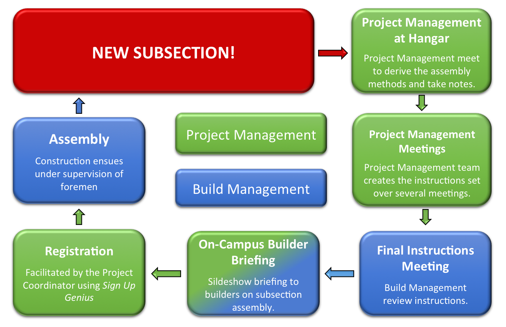
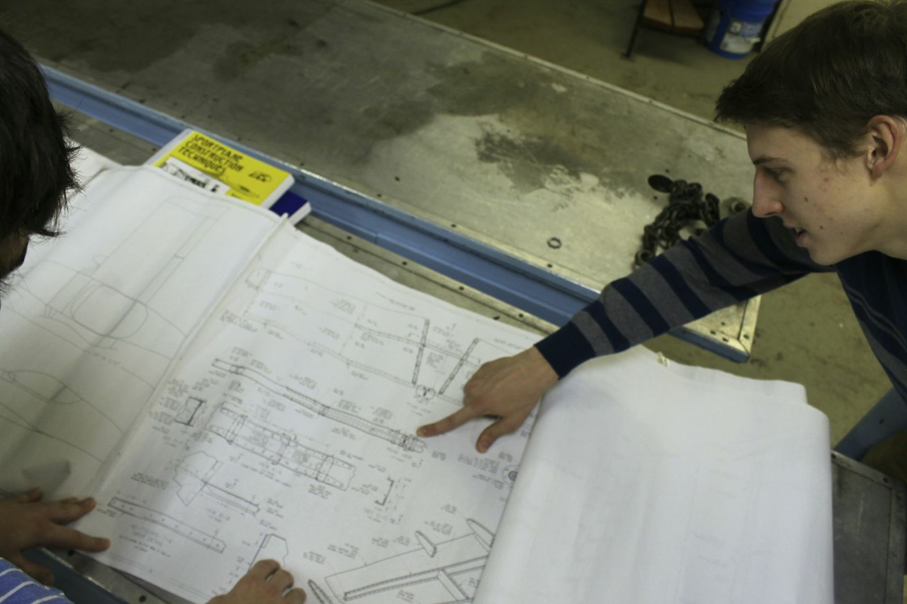
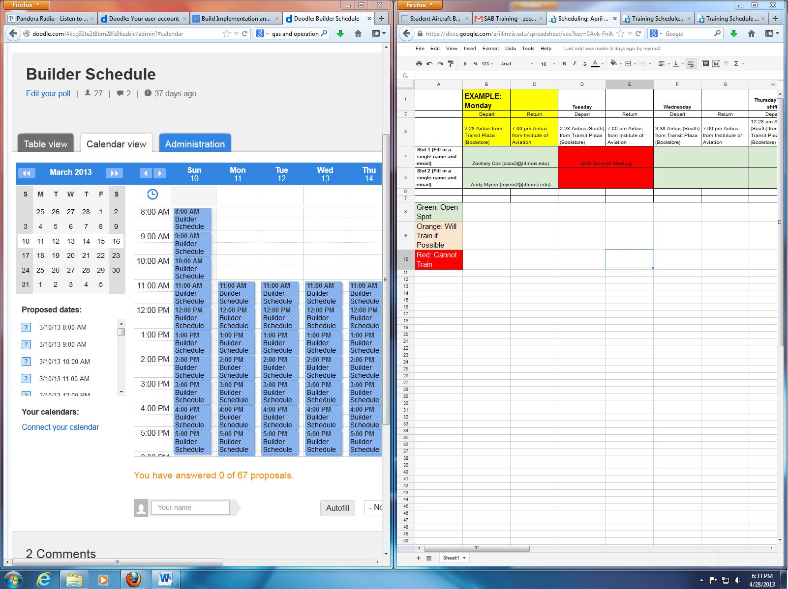
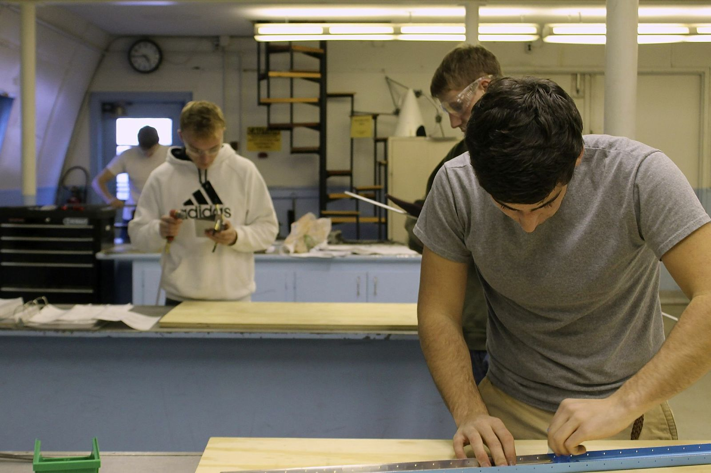

To maximize efficiency we created the following process to guide the individual teams and how they interact to ensure fluid progress
The Project Manager and his deputies begin analyzing the assembly and fabrication procedures of the relevant aircraft subsection. This team works to create 3 unique sets of instructions, created for the purposes of concurrent construction with 3 builders and 1 foreman supervising. The instructions are highly detailed. Additionally, the Project Management team works to create written references on the parts themselves, such as shading the sections of a part to be removed during fabrication or marking the diameter of the rivet to be secured. The instructions will be crafted to allow concurrent construction when possible.

The project management team uses these instructions and the CAD models to create a presentation for the technical project manager, the build managers, and the foremen. This explanation will be cursory. The primary purpose will be to familiarize the Build Management and Technical Project Manager with the gist of the assembly, while addressing expected problems and hang-ups. Technical building tips such as fluting techniques will not be discussed.
The technical project manager will prepare an in-depth description of procedures and methods, reminding the builders of common mistakes. The Technical Project Manager will use CAD models and photographs to assist in the subsection assembly presentation. This presentation will be prepared in layman's terms, with the awareness that most builders lack intense familiarity with aircraft assembly. There will be multiple meetings to distribute this information, each led by the Technical Project Manager and Build Managers. The current intention involves an initial meeting at the hangar using the prefabricated aircraft parts as an aid. This meeting will grant priority hangar session registration privileges. Another meeting, or series of meetings, will take place at lecture halls on campus. Attending these meetings will grant secondary registration privileges. At all meetings, handouts of instructions will be given to the builders. In addition, the builders will have access to the documents online.

The Project Coordinator will facilitate registration. Foremen availabilities will be due one week prior to the inception of construction on the relevant subsection. A Google Spreadsheet will be made available to primary registrants one week prior to the build week. Several days past this, secondary registrants will be granted access. Finally, at the start of the build week, registration will open to all builders, irrespective of assembly familiarity.
Assembly will take place in sessions lasting approximately 4 hours during the week, with several sessions taking place per day on the weekend. Three builders will be scheduled per session, supervised by an experienced builder appointed as a foreman. Concurrent construction will take place as often as is feasible. The foreman will assist as required with the three instruction sets, and will also act as a third builder in the case that all builders do not attend.
